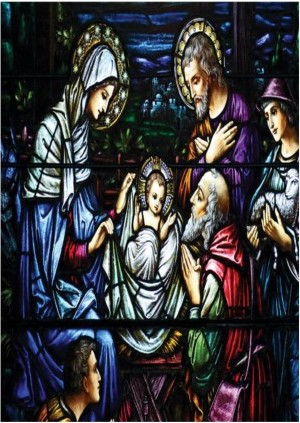

“Christmas” is a non-Biblical celebration, that is to say, it is mentioned nowhere in the Bible, was not practiced by the Early Church, and Church Father Origen (c. 184-c. 253 CE) declared it a pagan practice and its celebration a sin.

The date of Jesus’ birth is a matter of speculation, but the four Biblical hints do not favor December 25: first, the Star of Bethlehem, if a juncture of Venus and Jupiter, occurred on June 17, 2 BCE, while that of Jupiter and Saturn occurred in October 7 BCE; second, shepherds tend their flocks “in the field” (Luke 2:8 αγραυλουντες) from May to October, not in December; third, Zacharias’ service as Priest (Luke 1:8-11, 23-24, 26-27) indicates the birth of John the Baptist in March, and that of Jesus six months later; finally, censuses were forbidden in December, as that was a difficult travel month (Ezra 10:9-13). October might fit, but not December.
On the other hand, the Saturnalia, in honor of a Roman agricultural deity, with drunken reveling, gift-giving, and the reversal of roles between slaves and masters, was celebrated each year until around December 23. Also, in 274 CE, Roman Emperor Aurelian declared December 25 to be a festival in honor of “the birth of Sol Invictus,” (winter solstice as the birth of the sun) a Mithraic sun-god cult characterized by handshakes and ritual meals before altars in underground temples.
In 313 CE, in an effort to unite his dissolving Empire, Emperor Constantine issued the Edict of Milan, declaring religious tolerance for Christianity, and later presided over the Council of Nicaea in 325 CE. As masses of Romans now converted to Christianity, they refused to give up their celebratory feasts at the Solstice. A moral debate raged among the clergy, some of whom felt that fallen humankind needed a season of abandonment and excess (from which they could be gradually weaned), as long as it was carried on under the umbrella of Christian supervision, while others argued that all vestiges of paganism must be expunged. The Church compromised by recognizing December 25 as the nativity not of the Sun-god, but of the Son of God. In 742 CE, though, St. Boniface complained to Pope Zacharias that the Franks and Germans, whom he was trying to convince to give up their pagan carnivals, had witnessed such celebrations in the shadow of St. Peter’s itself!
Over subsequent centuries, Christmas absorbed further pagan symbols from Germans (Yule logs), Scandinavians (decorated evergreen trees) and Druids (mistletoe). Reformation Protestants tried reforming Christmas but had little impact. In 1659 English Puritans outlawed Christmas as unchristian, but it proved so popular that it was “restored” in 1681.
~~~~~~~~